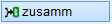

")

Sind in einer Zeichnung identische Auszugsformen enthalten, können diese zu einer Position zusammengefasst werden. Wenn die Biegeformen unterschiedliche Stabdurchmesser haben, bleiben die Positionen erhalten und werden untereinander platziert.
|
Tipp: |
|
Wenn die untereinander aufgeführten Positionen fortlaufend durchnummeriert werden sollen, verwenden Sie die Funktion [Formst | ÄndPos → Reihe]. |


|
§Wählen Sie im Funktionsbereich zunächst, wie die Biegeformen und der Positionstext nach dem Zusammenfassen dargestellt werden sollen:
§Klicken Sie die Positionstexte der beiden Auszugsformen an. [Welche Form]; mit [welcher Form]. Der Auszugstext, die Form sowie die Verlegung mit Positionierung werden markiert. Beachten Sie die Reihenfolge: Die Positionierung der ersten Auszugsform wird aufgelöst und in der Positionierung der zweiten Auszugsform zusammengefasst. Die Auszugsformen werden nach der Auswahl zusammengefasst und in der gewählten Art dargestellt. Sie können sofort weitere Auszugsformen zusammenfassen. Beispiel: Auszugsform zusammenfassen (Rundstahl)
|
|
§Wählen Sie im Funktionsbereich zunächst, wie die Biegeformen und der Positionstext nach dem Zusammenfassen dargestellt werden sollen:
§Klicken Sie die Positionstexte der beiden Auszugsformen an. [Welche Form]; mit; [welcher Form]. Die Auszugsformen werden zusammengefasst und in der gewählten Art dargestellt. Sie können sofort weitere Auszugsformen zusammenfassen. Beispiel: Auszugsform zusammenfassen (Matten)
|